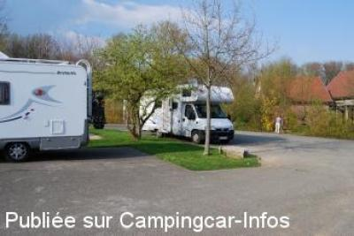
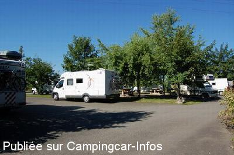
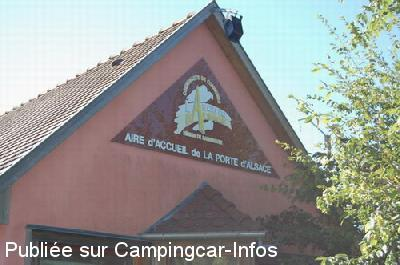
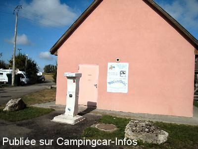

ASN = Aire de services avec stationnement nuit possible de :
CHAVANNES SUR L'ÉTANG
(N° 612)
Accès/adresse :
Rue d'Alsace, RD 419
68210 CHAVANNES SUR L'ÉTANG
68210 CHAVANNES SUR L'ÉTANG
Latitude : (Nord) 47.63325° Décimaux ou 47° 37′ 59′′
Longitude : (Est) 7.01858° Décimaux ou 7° 1′ 6′′
Tarif : 2015
Stationnement, services : 7 €
Gratuit pour les personnes à mobilité réduite.
Wifi gratuit
Type de borne : FLOT BLEU
Services :


Aire de pique-nique
Boulangerie
Autres informations :
10 emplacements

Le 28/08/2010 par JJac30700

Le 23/08/2010 par LEVOYAGEUR68

Le 23/08/2010 par LEVOYAGEUR68

Le 28/08/2009 par michelene73
de
susan68
le 27/06/2015 :
Bonjour.Depuis cette année,la commune à instaurée le stationnement+services gratuits pour les personnes à mobilité réduite.
Bonjour.Depuis cette année,la commune à instaurée le stationnement+services gratuits pour les personnes à mobilité réduite.
de
Capucine69
le 30/08/2014 :
Passage mi août 2014: excellent rapport qualité : tout pour 7 euros ( sauf les douches, il ne faut pas exagérer!) très bon entretien et plein d'infos sur la région à notre disposition. Boulangerie à 50 mètres. Bravo pour cette initiative!
Passage mi août 2014: excellent rapport qualité : tout pour 7 euros ( sauf les douches, il ne faut pas exagérer!) très bon entretien et plein d'infos sur la région à notre disposition. Boulangerie à 50 mètres. Bravo pour cette initiative!
de
JARDIN
le 03/10/2013 :
Aire très agréable et en plus un accès direct à la Wi Fi simplement avec l'adresse e.mail.
Aire très agréable et en plus un accès direct à la Wi Fi simplement avec l'adresse e.mail.
de
le 14/08/2012 :
Etant de la région,je vous signale,que depuis le 1er Juin,le prix du stationnement est passé de 5 à 7 euros,services compris.Chose incompréhensible,la journée est gratuite,les voitures ne paient pas.Sinon chaque camping-car à son emplacement,et en pleine saison,un pot d'accueil est offert a chaque touriste.
Etant de la région,je vous signale,que depuis le 1er Juin,le prix du stationnement est passé de 5 à 7 euros,services compris.Chose incompréhensible,la journée est gratuite,les voitures ne paient pas.Sinon chaque camping-car à son emplacement,et en pleine saison,un pot d'accueil est offert a chaque touriste.
de
Bernard73
le 04/05/2012 :
Aire très sympa pour faire une étape ou éventuellement passer 2-3 Jours avec beaucoup de possibilités de balades. Effectivement, il peux y avoir du bruit du fait de la proximité de la route. Mais il faut mieux être la que sur un parking d'autoroute. 5 euros stationnement eau et électricité compris.
Aire très sympa pour faire une étape ou éventuellement passer 2-3 Jours avec beaucoup de possibilités de balades. Effectivement, il peux y avoir du bruit du fait de la proximité de la route. Mais il faut mieux être la que sur un parking d'autoroute. 5 euros stationnement eau et électricité compris.
de
MASSON
le 13/05/2011 :
8 05 2011 Aire toujours très bien organisée 2 nouveaux blocs de 8 prises électriques sont en place les sanitaires impéccables et tout ça pour 5 Euros la nuitée bravo a la municipalité
8 05 2011 Aire toujours très bien organisée 2 nouveaux blocs de 8 prises électriques sont en place les sanitaires impéccables et tout ça pour 5 Euros la nuitée bravo a la municipalité
de
norbert geindre
le 13/08/2010 :
ein hervoragender platz nur zu emfehlen fuer" bleibe" oder durchreise ein b-moll steckdosen nur zwei vorhanden.
ein hervoragender platz nur zu emfehlen fuer" bleibe" oder durchreise ein b-moll steckdosen nur zwei vorhanden.
de
michelene73
le 28/08/2009 :
Aire toujours très agréable avec WC et emplacements séparés. Prévoir une multiprise pour le 220v car il y a seulement 2 prises classiques (2 autres prises existent mais non normalisées Europe). Point de départ pour randonnées à pied ou VTC. Proche du Canal Rhin Rhône.
Aire toujours très agréable avec WC et emplacements séparés. Prévoir une multiprise pour le 220v car il y a seulement 2 prises classiques (2 autres prises existent mais non normalisées Europe). Point de départ pour randonnées à pied ou VTC. Proche du Canal Rhin Rhône.
de
Jochen B.
le 21/07/2009 :
Auch wir wurden am 20.04.09 von einer Gruppe teilweise maskierter und mit Schlagstöcken bewaffneter Jugendlicher gegen Mitternacht inmitten mehrerer Wohnmobile gezielt attackiert und vom Platz vertrieben. Nach vielen Jahren Frankreich die erste aber heftige negative Erfahrung auf einem Stellplatz.
Schade, aber vor dem Platz kann ich nur warnen
Auch wir wurden am 20.04.09 von einer Gruppe teilweise maskierter und mit Schlagstöcken bewaffneter Jugendlicher gegen Mitternacht inmitten mehrerer Wohnmobile gezielt attackiert und vom Platz vertrieben. Nach vielen Jahren Frankreich die erste aber heftige negative Erfahrung auf einem Stellplatz.
Schade, aber vor dem Platz kann ich nur warnen
de
Michael Balzer
le 02/07/2009 :
Schöner Übernachtungsplatz ! Wir waren auf der Fahrt in den Süden kurz vor Pfingsten 09 da !
Leider wurden wir gegen 01.00 h morgens von angetrunkenen
Jugendlichen belästigt (Schläge gegen das Wohnmobil und
Parolen gegen Deutsche). Schade, ich hoffe Ausländer werden auf deutschen Stellplätzen besser behandelt.
Wir werden diesen Platz zukünftig meiden.
Schöne Grüße
Michi
Schöner Übernachtungsplatz ! Wir waren auf der Fahrt in den Süden kurz vor Pfingsten 09 da !
Leider wurden wir gegen 01.00 h morgens von angetrunkenen
Jugendlichen belästigt (Schläge gegen das Wohnmobil und
Parolen gegen Deutsche). Schade, ich hoffe Ausländer werden auf deutschen Stellplätzen besser behandelt.
Wir werden diesen Platz zukünftig meiden.
Schöne Grüße
Michi
de
Hauchecorne
le 25/05/2009 :
L'aire est maintenant payante 5€ pour 24 heures, un employé très sympathique de la communauté de communes passe le soir pour le règlement. §
L'aire est maintenant payante 5€ pour 24 heures, un employé très sympathique de la communauté de communes passe le soir pour le règlement. §